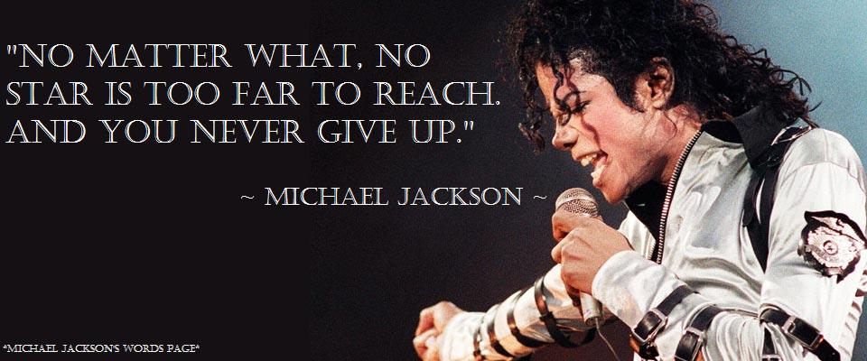

In my eyes MJ was a generational talent. Not only was he musically talented, but he was also a kind soul and didn't hurt or bother nobody. People and the media painted MJ as a bad guy, just so they could hide their own faults and wrong doings. They tried to bring an artist, a man, a human down so they could break him and ruin his life and legacy. Michael saw that and addressed it but continued to remain humble and remain the kind soul he was. I'll never understand how MJ did it. How he was able to keep his composure and still be so nice to the world when the world was everything but nice to him. His ability to still be nice, kind, compassionate, and want to spread peace throughout the world is his greatest talent.
